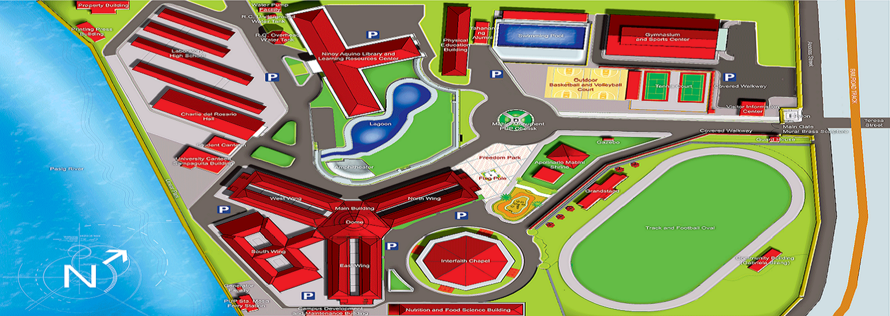

POLYTECHNIC UNIVERSITY OF THE PHILIPPINES
THE COUNTRY'S 1ST POLYTECHNICU
Image Map of the Polytechnic University of the Philippines
Click anywhere on the map to go to a new page and read more about the place.
Scroll down to see the whole map and information of the place.
